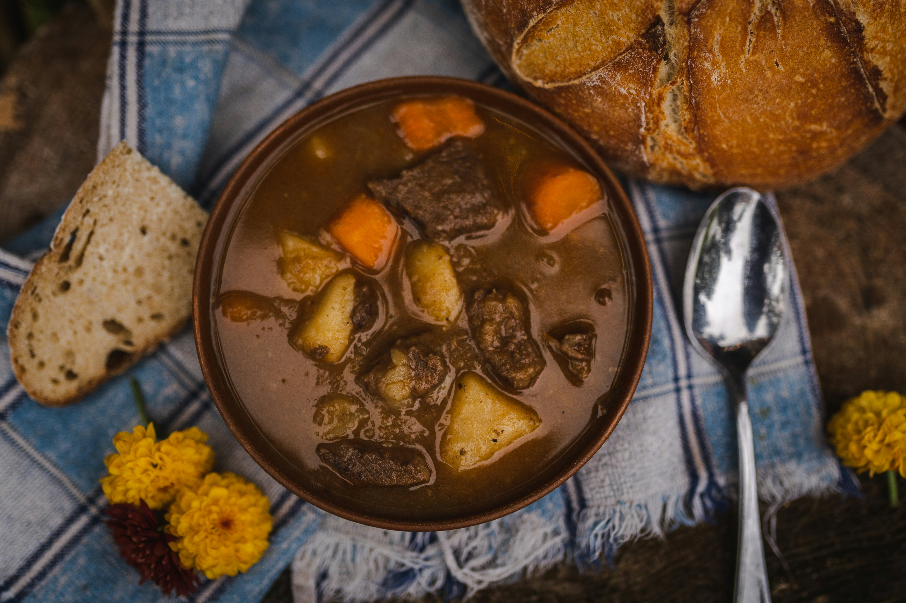
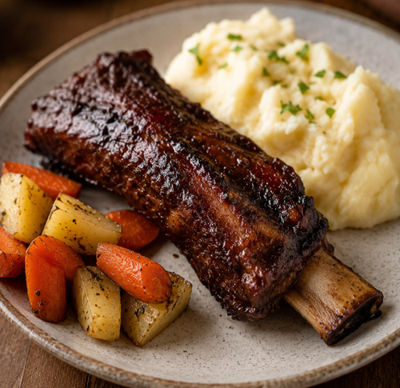
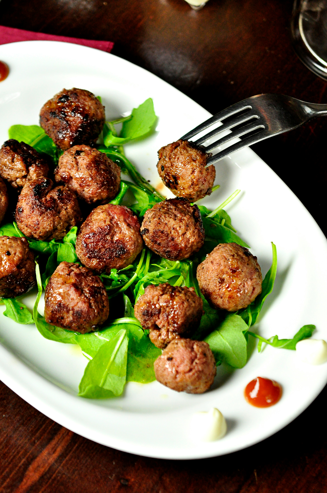
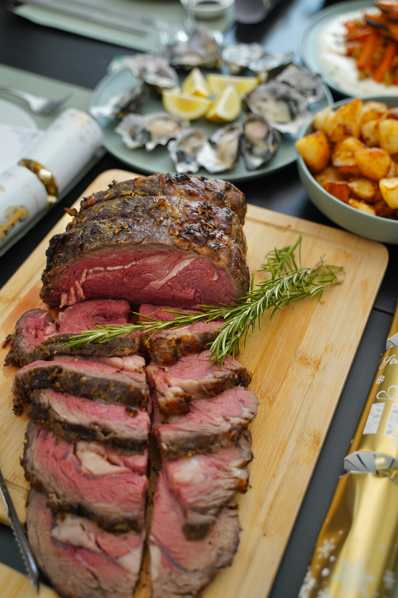
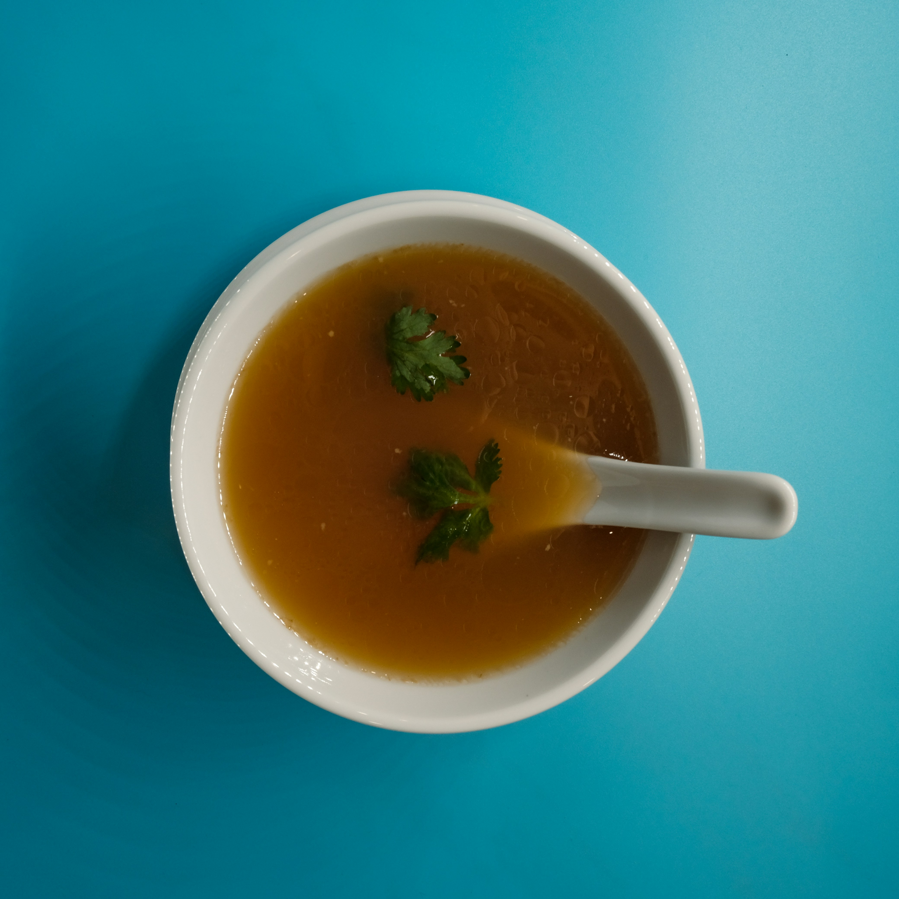
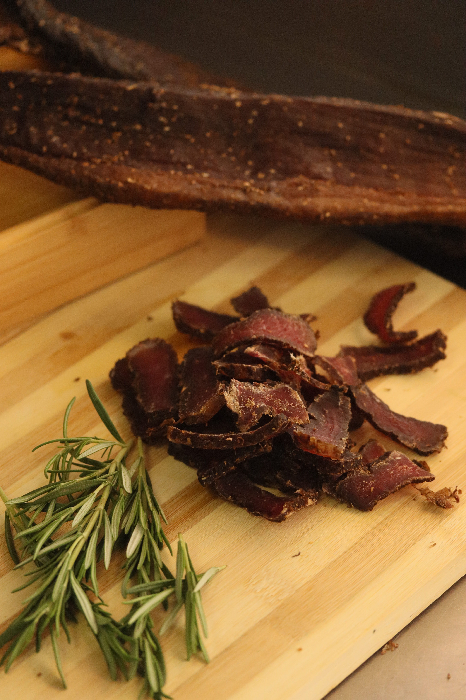
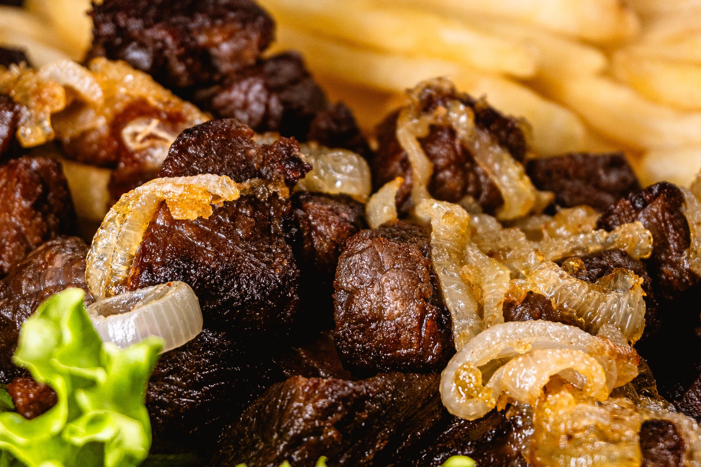

A hearty, traditional soup made with tender moose nose simmered slowly with vegetables and a flavourful broth. This comforting dish makes use of a part of the animal that is often overlooked and reflects the resourcefulness of using as much of the moose as possible. It is a rich and warming meal, especially during the colder months.
Moose Stew

Moose meat slowly cooked with potatoes, carrots, onions, and a rich broth.
Moose Ribs

Moose ribs seasoned and slow-cooked until tender, then finished with a sauce or glaze. Because moose is lean, slow cooking is useful for keeping the meat tender.
Moose Meatballs

Ground moose mixed with breadcrumbs, egg, onion, and seasonings, then baked or cooked in a skillet.
Moose Chili
Ground moose simmered with beans, tomatoes, onions, peppers, and chili spices.
Moose Roast

A moose roast cooked slowly with onions, carrots, potatoes, and herbs.
Moose Bone Broth

A rich, nourishing broth made by slowly simmering moose bones with vegetables and herbs.
Kâhkêwak (dry meat)

Thin strips of moose meat seasoned and dried until they develop a chewy texture and concentrated flavour.
Moose Liver and Onions

Tender slices of moose liver cooked with onions and simple seasonings for a hearty meal.